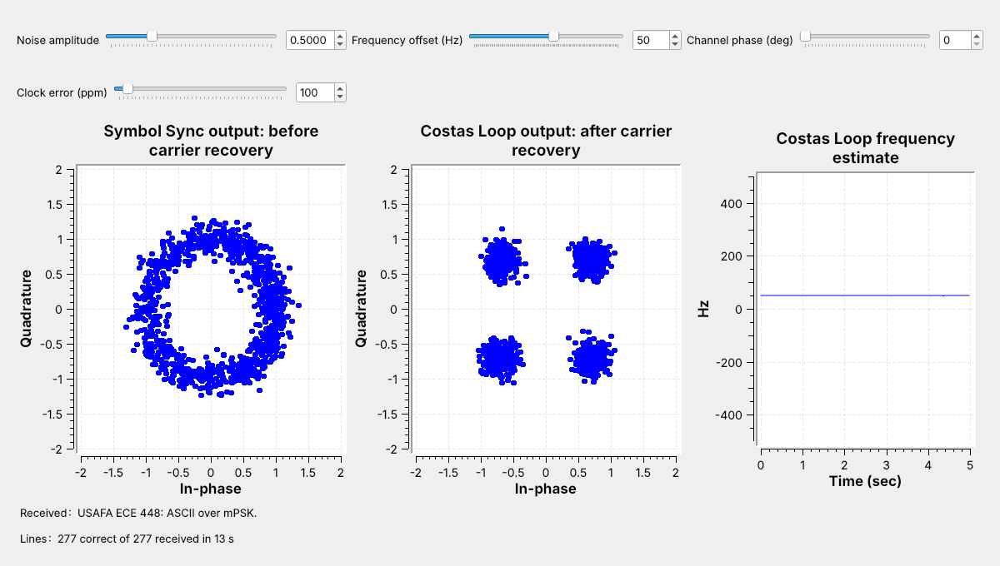
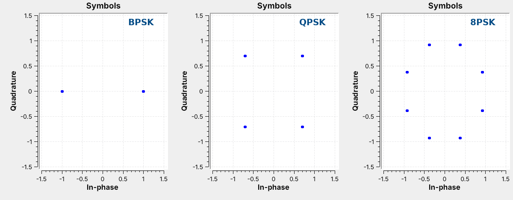
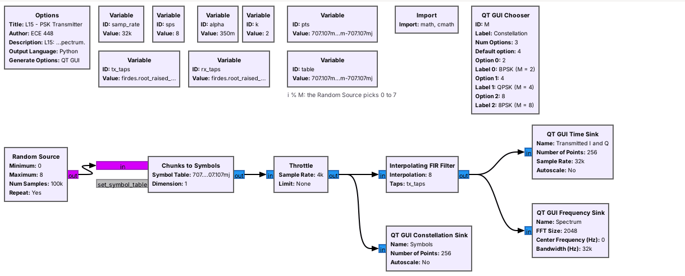
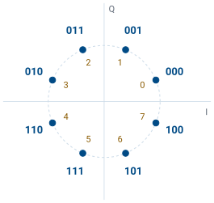
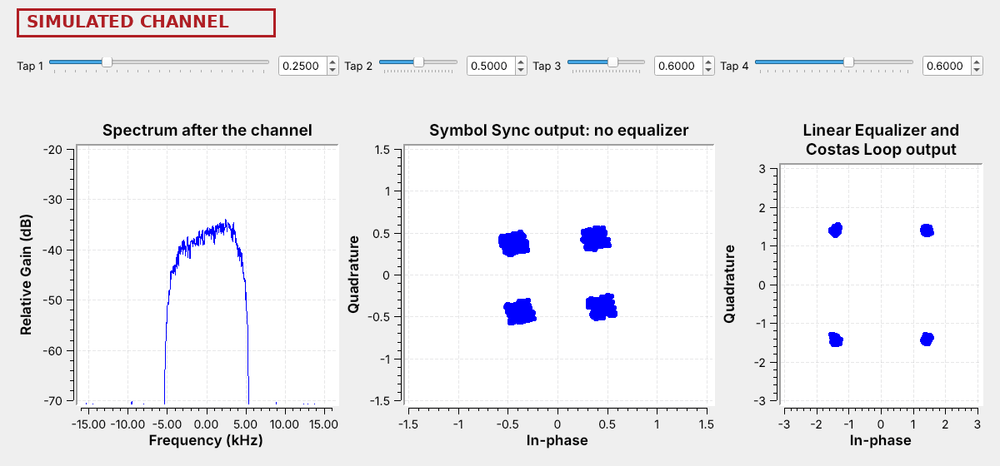
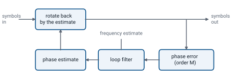
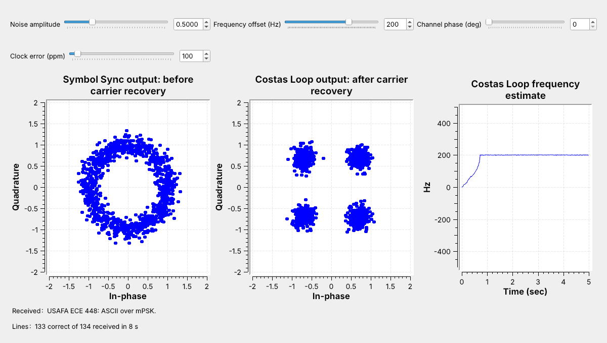
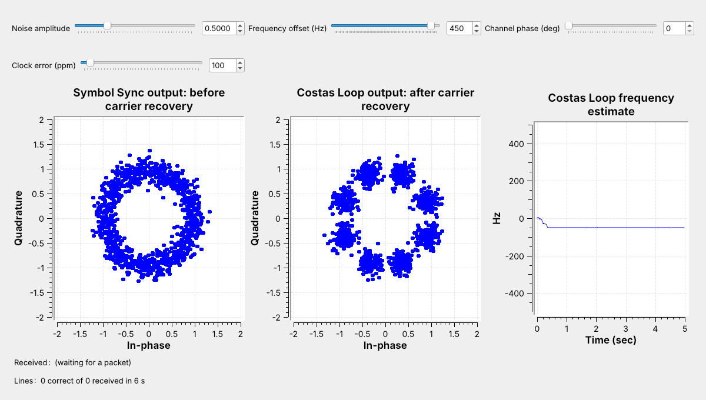
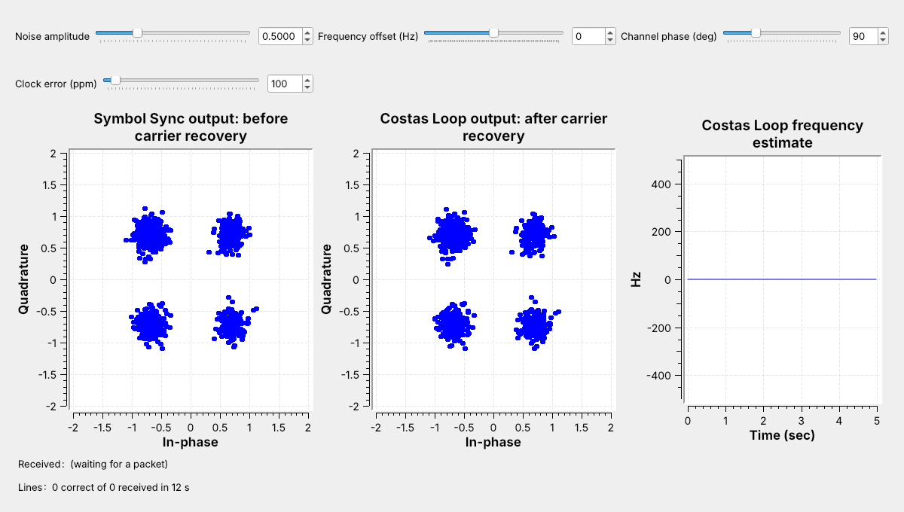
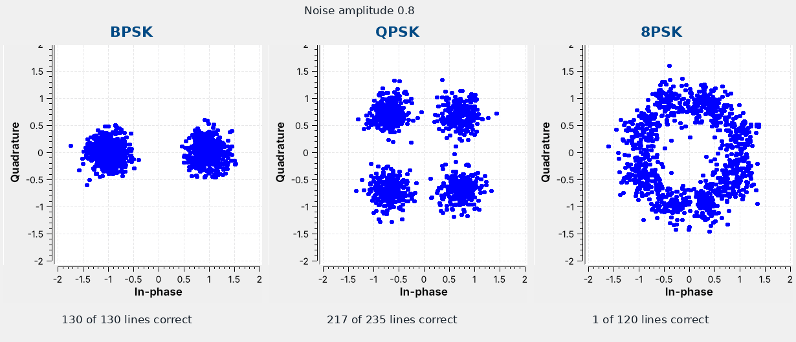

L15 - mPSK#
mPSK
BPSK, QPSK, and 8PSK in GNU Radio, with carrier and symbol-timing recovery.
Lesson 15 · Module 6: Waveform Applications & RF Reverse Engineering · Dr. Neil Rogers
Slides
Learning Objectives
- I can implement an mPSK modulator and demodulator (BPSK, QPSK, 8PSK) and recover carrier and symbol timing.
Text over QPSK

Run
L15-psk-link.grcand type 50 into the frequency offset box.Watch the ring before the Costas Loop become four clusters after it.
The figure is today’s flowgraph, L15-psk-link.grc, running. It sends the same packets of text as Lesson 10, but each symbol now carries two bits as one of four phases, which is QPSK. The channel adds noise, and here its frequency offset slider is set to move the carrier 50 Hz away from where the receiver expects it; the slider opens at 0.
The left plot shows the received symbols after timing recovery. They form a ring, because the frequency offset turns the constellation a little further with every symbol. The middle plot shows the same symbols after carrier recovery, which a Costas Loop does: the ring becomes four clusters, and the text arrives. Today we follow the GNU Radio wiki’s Guided Tutorial PSK Demodulation step by step, with PySDR’s Digital Modulation and Synchronization chapters as background: transmit, add a channel, recover the timing, undo multipath, recover the carrier, and decode. Then we turn up the noise and watch what happens to each constellation.
Phase-Shift Keying

Run
L15-psk-tx.grcand switch the constellation chooser.\(M\) phases on a circle carry \(k = \log_2 M\) bits: 1, 2, or 3.
M-ary phase-shift keying (mPSK) puts \(M\) points on a circle of radius 1. Every point has the same amplitude, so only the phase carries information. Lesson 3 introduced these constellations; here they come from L15-psk-tx.grc, with a chooser that switches \(M\) while the flowgraph runs.
A constellation with \(M\) points carries \(k = \log_2 M\) bits per symbol. At the same symbol rate, QPSK sends twice as many bits as BPSK, and 8PSK three times as many. The points of QPSK sit at 45° plus multiples of 90°, and those of 8PSK at 22.5° plus multiples of 45°, because those are the positions the Costas Loop’s detectors expect.
Step 1: The Transmitter

Chunks to Symbols looks up each symbol’s point; the L9 RRC filter shapes it.
Every \(M\) fills the same 5.4 kHz band.
The transmitter is Lesson 9’s, with complex points in place of real levels. Chunks to Symbols takes a number from 0 to \(M - 1\) and outputs that point of the constellation, and the Interpolating FIR Filter shapes it with the same RRC taps as Lesson 9: \(\alpha = 0.35\), 8 samples per symbol, and 32 kHz sampling, so 4,000 symbols a second. The tutorial’s Constellation Modulator packs the bit grouping, the mapping, and the RRC filter into one block, and L15-psk-multipath.grc uses it; the link shows the same chain as separate blocks, so the Gray map here and Step 6’s differential encoder are visible. Lessons 9 and 10 showed how the roll-off \(\alpha\) sets the width of the band.
The spectrum does not change with \(M\). The band is \((1 + \alpha) R_s = 1.35 \times 4\) kHz \(= 5.4\) kHz wide whether each symbol carries one bit or three. More bits per symbol move more data through the same bandwidth, but the points sit closer together, and the Noise frame below shows what that does.
Step 1: Bits to Points

Repack Bits groups the bits \(k\) at a time.
A Map block turns each group into a phase index with a Gray code.
Neighbors differ in one bit.
The text arrives as bytes, so the link flowgraph uses Repack Bits to regroup each byte’s bits \(k\) at a time, most significant first. A Map block then turns each \(k\)-bit group into a phase index \(i\), the number of steps of \(360°/M\) counterclockwise from the first point. The figure shows the map for 8PSK: the index is in amber and the bits it carries are in blue.
The labels follow a Gray code, as in Lesson 3, so that the two neighbors of any point differ from it in exactly one bit. Almost every symbol error is a slip to a neighbor, so one symbol error corrupts one bit. The Gray label of index \(i\) is \(i \oplus (i \gg 1)\), the index XORed with itself shifted right one bit; the flowgraph computes it as the variable gray, and the transmitter’s Map uses its inverse, ungray.
Bits per Symbol
At \(R_s = 4{,}000\) symbols per second, each modulation fills the same 5.4 kHz and carries \(k\) bits per symbol:
Modulation |
\(M\) |
\(k\) |
Bit rate |
Spacing of neighboring points |
|---|---|---|---|---|
BPSK |
2 |
1 |
4 kb/s |
2.00 |
QPSK |
4 |
2 |
8 kb/s |
1.41 |
8PSK |
8 |
3 |
12 kb/s |
0.77 |
QPSK doubles the bit rate of BPSK in the same band, and 8PSK adds another 50%. The spacing column is for points on a circle of radius 1: the more points share the circle, the closer together they sit. The link flowgraph’s Noise amplitude slider sets the noise the Channel Model adds to each sample, and the same setting affects every \(M\) alike, so we can compare them by eye.
Step 2: The Channel
Move one Channel Model slider at a time and watch the left plot.
Noise spreads the points, a phase rotates them, and an offset spins them into a ring.
Lesson 3 showed these four problems on a QPSK constellation, and the Channel Model adds all four. A real receiver meets every one of them. The transmitter and receiver oscillators are never exactly equal, so the carrier arrives a few hertz to kilohertz away from where the receiver tunes, and the path length sets an unknown phase. The two sample clocks also differ, which is the clock error Symbol Sync tracked in Lesson 9.
A frequency offset \(\Delta f\) turns the constellation by \(360° \times \Delta f / R_s\) every symbol. At 50 Hz and 4,000 symbols per second that is 4.5° per symbol, so the points go once around the circle every 80 symbols and land everywhere on the ring, as in the opening figure, and the receiver has to remove that rotation before it decides any symbol.
The Receiver

The matched filter and Symbol Sync keep Lesson 9’s settings.
A Costas Loop removes the carrier’s phase and frequency error.
A Constellation Decoder picks the nearest point.
The top row is the transmitter: the packets of Lessons 8 and 10, Repack Bits, the Gray Map, and Chunks to Symbols, with a Differential Encoder that a later frame explains. A Channel Model block stands in for the radio path. It adds Gaussian noise, a frequency offset, a fixed phase rotation, and a clock error, each set by a slider.
The receiver keeps Lesson 9’s matched filter and Symbol Sync with the same settings: Gardner detector, 8 samples per symbol, loop bandwidth 0.045. The Costas Loop follows, with its order set to \(M\). The Constellation Decoder outputs the phase index of the nearest point, and from there the receiver undoes each transmitter step in reverse order and hands the bits to Lesson 8’s access-code search and Text Sink.
Step 3: Timing Recovery
Symbol Sync finds the sampling instant with the carrier still spinning.
Watch its output: one point per symbol, still turning.
The receiver recovers the timing first. Gardner’s detector compares samples taken half a symbol apart, and a carrier that turns only a few degrees per symbol barely changes that comparison, so Symbol Sync locks with the frequency offset still present. Its output is one sample per symbol at the right instant, which is the ring in the left plot of the opening figure.
The Costas Loop then needs only those samples. Working at the symbol rate, it sees one clean point per symbol and has 8 times fewer samples to process than it would before Symbol Sync. The order matters in the other direction too: a carrier loop placed before timing recovery would see samples taken between symbols, where the points are not on the constellation. The tutorial does this step with the Polyphase Clock Sync block, which does the same job with a bank of matched filters; we keep Lesson 9’s Symbol Sync, which is the one place this lesson departs from the tutorial.
Step 4: Multipath and the Equalizer

Run
L15-psk-multipath.grcand lower Tap 2, 3, or 4.Watch the spectrum dip and the clusters smear, then the equalizer pull them tight.
A radio signal often reaches the receiver along more than one path, and the echoes add with different delays. That multipath makes the channel’s gain uneven across the band, and each symbol smears into its neighbors. The tutorial’s fourth stage adds it to the Channel Model and removes it with an equalizer, and L15-psk-multipath.grc follows that stage, with four tap sliders on the Channel Model, as in Neil’s 2025 demo. Tap 3 sets the channel’s gain at the center of the band and Taps 2 and 4 near its lower and upper edges; Tap 1 sits outside the signal’s band and barely changes it. At 1 the spectrum is flat and the clusters are tight; lower the sliders and the spectrum tilts and dips while the clusters smear.
The Linear Equalizer block, set to the CMA algorithm, learns a filter that flattens the channel again, using only the fact that every QPSK point has the same amplitude. Its output, after a Costas Loop, is four tight points again; very deep dips are beyond what it can undo. The rest of this lesson’s links use a channel with no multipath, so they leave the equalizer out.
Step 5: The Costas Loop

The loop rotates each symbol back and measures how far it misses a point.
Watch the frequency plot settle on the offset.
The Costas Loop keeps an estimate of the carrier’s phase and rotates each incoming symbol back by it. A phase detector then measures how far the rotated symbol sits from the nearest constellation point, without knowing which point was sent. For BPSK it uses the product \(I \times Q\), which is zero on the I axis. For QPSK GNU Radio’s detector uses the signs of \(I\) and \(Q\) to find the nearest point, and for 8PSK it also checks which of \(|I|\) and \(|Q|\) is larger; that is why the loop needs the order \(M\), and why the points have to sit where the detector expects them.
A loop filter turns the error into two corrections, a small step in phase and a smaller change in frequency, as Symbol Sync did for timing in Lesson 9. The frequency part makes the loop follow a constant offset with no lasting phase error. The block’s second output is that frequency estimate, in radians per symbol, and the flowgraph scales it by \(R_s/2\pi\) to plot it in hertz. The loop bandwidth, 0.02 here, sets how fast the loop responds: a wider loop locks faster from a larger offset but lets more noise into the phase estimate.
Acquisition

The loop starts at 0 Hz and reaches the 200 Hz offset in under a second.
The text arrives once it locks.
Here the frequency offset is 200 Hz, and the loop starts from 0 Hz. The right plot shows the frequency estimate climbing to 200 Hz and settling there in about 0.7 s, about 2,800 symbols. Until it settles the constellation keeps turning and the packets fail; after that the four clusters hold still and every line arrives.
The time a loop takes to lock is its acquisition time, and the range of offsets from which it locks at all is its pull-in range. Both depend on the loop bandwidth, the constellation, and the noise.
Pull-In Range

At 450 Hz the QPSK loop settles at −50 Hz, a false lock.
No packet arrives.
At 450 Hz the QPSK loop does not lock. Its estimate settles near −50 Hz, 500 Hz from the true offset. The symbols then keep turning by \(360° \times 500/4000 = 45°\) each, so they alternate between the four QPSK positions and the four positions between them, and the plot shows eight clusters. The detector’s error averages to zero there, so the loop stays. This is a false lock, and no packet arrives.
Every Costas Loop has a limit like this, and the L15 Lab finds it for 8PSK. A real receiver therefore corrects most of the frequency error before the Costas Loop, often with a frequency-locked loop such as GNU Radio’s FLL Band-Edge block, and leaves the Costas Loop only the last few tens of hertz. Two separate radios can differ by tens of kilohertz, far beyond any Costas Loop’s range. The L15 Lab uses one Pluto, whose transmitter and receiver share the same reference, so its frequency offset is close to zero.
Step 6: Phase Ambiguity

The constellation looks perfect, but no text arrives.
The loop locked one point away, \(90°\) off.
The figure removes the frequency offset, turns the channel phase to 90°, and switches differential coding off. The Costas Loop locks and the four clusters look perfect, yet no packet arrives. The loop has no way to tell which point is which: a QPSK constellation turned by 90° looks exactly like the original, so the loop can lock in any of \(M\) positions. Every decision is then one point off, every bit pattern changes, and the access code never matches.
This is the phase ambiguity that Lesson 10’s PlutoSDR link met as a polarity switch. A BPSK loop can lock right side up or upside down. A QPSK loop can lock in 4 positions and an 8PSK loop in 8, so on a real radio, where the channel phase is random, the text would arrive only on the runs that happen to lock in the right one.
Step 6: Differential Decoding
Index sent |
0 |
1 |
3 |
3 |
2 |
|---|---|---|---|---|---|
Received, one step off |
1 |
2 |
0 |
0 |
3 |
Change, mod 4 |
– |
1 |
2 |
0 |
3 |
Send the data as the change in phase.
A rotation shifts every index but not the changes.
Differential coding removes the ambiguity. The Differential Encoder adds each new phase index to the last one it sent, mod \(M\), so the data rides on the change in phase from one symbol to the next. The Differential Decoder subtracts the index before it from each received index, mod \(M\). A loop that locked one step off adds 1 to every received index, and the differences do not change. The table shows QPSK: the data 1, 2, 0, 3 arrives as the changes whatever the rotation. The differential-encoding tutorial in the references works the same idea for bits.
Differential coding has one drawback in noise. One wrong decision corrupts two differences, the one into it and the one out of it, so one wrong decision corrupts two symbols of data. It also has a second advantage: noise can make the Costas Loop slip to another rotation now and then, and without differential coding every later decision is then wrong, while with it the slip corrupts only the symbols where it happens. In the flowgraph the encoder and decoder each sit beside a Selector, and the variable diff, 1 or 0, picks the coded or the uncoded path at both ends; change it and run the flowgraph again.
Carrier Recovery Explorer
The explorer runs GNU Radio’s Costas Loop algorithm at one sample per symbol for 10 s at 4,000 symbols per second. The left panel shows the loop’s output for the last 600 symbols, with the ideal points as amber rings; the right panel shows the frequency estimate, with the true offset dashed. Its loop bandwidth is 0.04, twice the link’s, so it locks faster and from farther away than the flowgraphs do. Start with QPSK at 100 Hz and watch the loop lock within a fraction of a second, then raise the offset until it no longer locks.
Noise

At the same noise, the 8PSK clouds merge first.
Points that sit closer together need a quieter channel.
The figure runs the link three times with the noise amplitude at 0.8 and no frequency offset, changing only M. The noise spreads every point into a cloud of the same size. BPSK’s two points are far apart, so its clouds stay separate and every line arrives. QPSK’s clouds grow toward each other, a few symbols cross, and a few lines arrive with a wrong character. 8PSK’s eight clouds merge into a ring, the decoder picks the wrong point again and again, and almost no line arrives intact.
More bits per symbol put the points closer together, so the same channel that carries BPSK cleanly can be too noisy for 8PSK. Try it in L15-psk-link.grc by raising the noise amplitude a step at a time and watching the clouds grow and the Received label break up; the L15 Lab records where each constellation stops delivering text.
mPSK on a Real Radio
The L15 Lab sends QPSK through one PlutoSDR, TX port to RX port, with a 30 dB attenuator.
The Pluto blocks and an AGC replace the Channel Model.
Nothing in L15 transmits over the air.
The L15 Lab moves this link onto a PlutoSDR. The transmit half ends at a PlutoSDR Sink at 915 MHz instead of the Channel Model, and the receive half starts at a PlutoSDR Source, with the same matched filter, Symbol Sync, Costas Loop, decoder, and text search. As in L10 and L12, a Rational Resampler raises the 32 kHz stream by 32, to 1.024 MS/s, on the way out and lowers it again on the way in, and an AGC after it holds the received level near amplitude 1 at any attenuation. The radio supplies the phase ambiguity on its own: every time the flowgraph starts, the carrier arrives with a new phase, and differential coding decides whether the text still arrives.
In class we transmit only into a cable, into a shielded enclosure, or at very low power in an ISM band, and only when the lesson says to. Nothing in this lesson transmits; the L15 Lab transmits from the Pluto’s TX port through an inline 30 dB attenuator into its own RX port. We have run the PlutoSDR flowgraph only in simulation, with a model of the cable in place of the radio, so the lab is its first run on hardware.
Key Point
mPSK sends \(\log_2 M\) bits per symbol on the carrier’s phase. Symbol Sync recovers the timing, a Costas Loop removes the frequency and phase error, and differential coding removes the \(360°/M\) ambiguity.
Downloads
L15-psk-tx.grc: random BPSK, QPSK, or 8PSK symbols shaped by the RRC filter, with the constellation, I and Q, and the spectrum. No hardware needed.
L15-psk-link.grc: the whole text link, with sliders for the noise amplitude, frequency offset, channel phase, and clock error, a variable that turns differential coding on or off, constellations before and after the Costas Loop, its frequency estimate, and the received text. No hardware needed.
L15-psk-multipath.grc: QPSK from a Constellation Modulator through a Channel Model with four tap sliders, as in the tutorial’s fourth stage, with the spectrum and the constellation before and after a Linear Equalizer. No hardware needed.
GNU Radio wiki: Guided Tutorial PSK Demodulation: the tutorial this lesson follows. Its last flowgraph,
mpsk_stage6.grc, ships with GNU Radio inshare/gnuradio/examples/digital.PySDR: Digital Modulation and PySDR: Synchronization: background on constellations, timing, and carrier recovery.
Open a .grc file from GRC’s File menu, or run gnuradio-companion L15-psk-link.grc from the radioconda prompt. To change the constellation in the link, double-click the variable M, set it to 2, 4, or 8, and run the flowgraph again; the Costas Loop’s order and every table follow it. The variable diff works the same way: 1 turns differential coding on and 0 turns it off. The Text Sink is an Embedded Python Block saved inside the .grc file. The L15 Lab page has the PlutoSDR version of the link.
Summary
Idea |
What it is |
Number to remember |
|---|---|---|
mPSK |
\(M\) phases on a circle |
\(k = \log_2 M\) bits per symbol |
Bandwidth |
set by the symbol rate, not \(M\) |
\((1 + \alpha) R_s\) = 5.4 kHz at 4 kbaud |
Gray map |
neighbors differ in one bit |
label of index \(i\) is \(i \oplus (i \gg 1)\) |
Receiver order |
matched filter, Symbol Sync, Costas Loop, decoder |
timing before carrier |
Frequency offset |
turns the points \(360° \Delta f/R_s\) a symbol |
50 Hz is 4.5° a symbol at 4 kbaud |
Costas Loop |
phase detector of order \(M\), loop filter |
pull-in range shrinks as \(M\) grows |
Phase ambiguity |
the loop can lock in any of \(M\) rotations |
\(360°/M\) apart |
Differential coding |
data on the change of phase |
one wrong decision corrupts two symbols |
Noise |
spreads each point into a cloud |
watch the clouds and the Received label |
Practice
Looking Ahead
The L15 Lab builds a carrier-recovery loop, finds the noise and offset limits, and runs QPSK on a PlutoSDR.
Lesson 16 hops the carrier itself from channel to channel.
The L15 Lab is the hands-on version of this lesson, and it takes most of the second period. You build an 8PSK carrier-recovery flowgraph from an empty canvas, find the noise at which each constellation stops delivering text, find the 8PSK loop’s pull-in range, map the phase ambiguity with differential coding off, and then send your own text through a PlutoSDR and a cable.
Lesson 16 turns to frequency hopping, where the transmitter moves its carrier from channel to channel many times a second and the receiver has to follow it. Lesson 20 returns to constellations with QAM and OFDM.